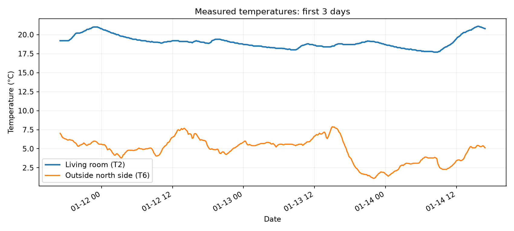
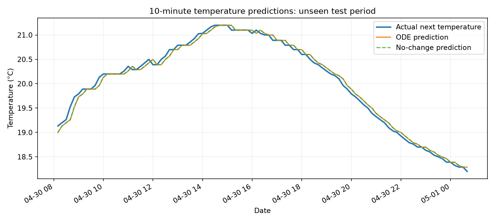
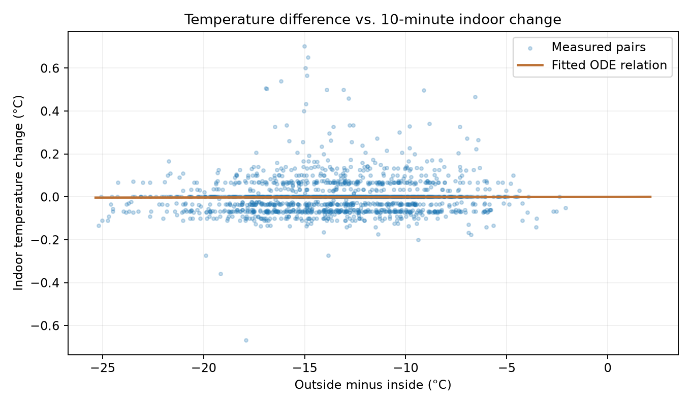

1. Research question
Can a first-order differential equation based on the difference between indoor and outdoor temperatures predict the living-room temperature ten minutes later?
2. Dataset
The UCI Appliances Energy Prediction dataset contains sensor observations from a Belgian home. This project uses date, living room temperature (T2), and north-side outside temperature (T6). Data are ordinarily recorded at 10-minute intervals; we only analyze consecutive pairs that are exactly 10 minutes apart.
Observed period: 2016-01-11 17:00:00 to 2016-05-27 18:00:00.
3. Mathematical model
Newton's Law of Cooling relates the speed of indoor temperature change to the difference between outdoor and indoor temperatures:
For a ten-minute step (1/6 hour), Euler's approximation becomes:
The coefficient k is estimated from the first 80% of time-ordered temperature changes, then tested on the final 20%. A non-negative k is required by the simple cooling model.
4. Results and visualizations
The estimated cooling-rate coefficient is 0.00083 per hour. This is an empirical coefficient estimated from observed 10-minute changes, not a known physical constant. The ODE achieved a lower error than the no-change baseline.
Figure 1. Measured temperatures

Illustrates the measured variation in indoor and outdoor conditions over the first three days.
Figure 2. Actual vs. model predictions

Shows 100 successive observations from the held-out test period. Also includes a no-change baseline.
Figure 3. ODE relationship

Relates a 10-minute indoor change to the instantaneous indoor–outdoor difference and shows the fitted ODE slope.
5. Interpretation and limitations
The measured indoor temperatures depend on more than the outside temperature. Heating, occupants, ventilation, sunlight, and thermal storage are not explicitly included in this model. A low error alone does not prove that Newton's Law provides a complete explanation, particularly when indoor temperatures change slowly.
Test conclusion: The ODE model achieved a slightly lower mean absolute error (MAE) than the no-change baseline, indicating a marginal improvement in predicting living room temperature over 10-minute intervals. However, the improvement was very small (approximately 0.085%), suggesting that the indoor–outdoor temperature difference alone has limited predictive value. Other factors, such as heating, occupancy, and thermal properties of the building, may also influence indoor temperature changes. Despite these limitations, the first-order model provides a useful starting point for understanding how differential equations can be applied to real-world temperature data.
All reported numerical results and figures on this page were generated by analysis.py from the downloaded UCI dataset. No measurements were invented.
Reference: Candanedo, Feldheim & Deramaix (2017), Data driven prediction models of energy use of appliances in a low-energy house. Dataset hosted by UCI Machine Learning Repository.